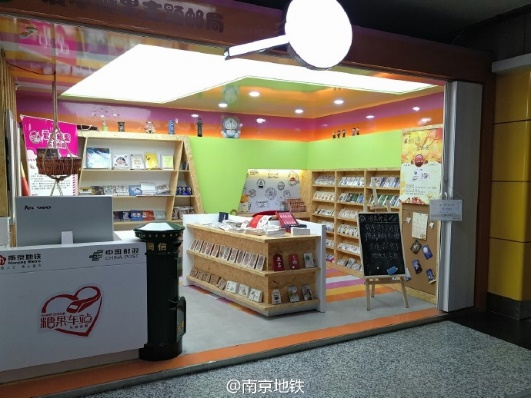
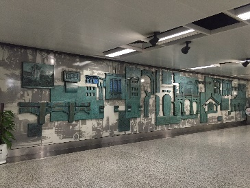
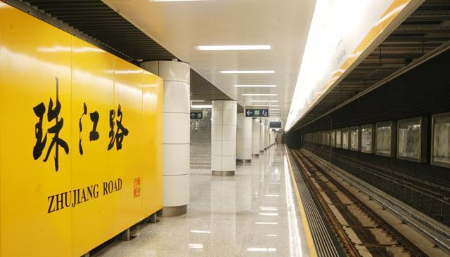

珠江路站・糖果车站 |
“糖果车站”缘起一个真实的感人故事：一对夫妻带着患病的孩子到南京市儿童医院治病后，乘地铁返回。在珠江路地铁站，患病的孩子哭着说想吃糖，囊中羞涩的父母很为难。一名地铁员工看到这一幕，从口袋中掏出为自己儿子准备的糖果，送到患病孩子的手中，并嘱咐孩子要听父母的话，早日康复。从那以后，珠江路地铁站的所有员工，都带着糖果上班。由此，拿到糖果的孩子们都亲切地把南京地铁珠江路站叫做“糖果车站”。  |
珠江路站艺术墙的主题为“民国叙事”，作品以老照片式的手法，再现了民国时期的俚俗繁华和悠悠往事，使人真切地感受到古都南京的魅力。 
|
地理位置
 |
出入信息
|